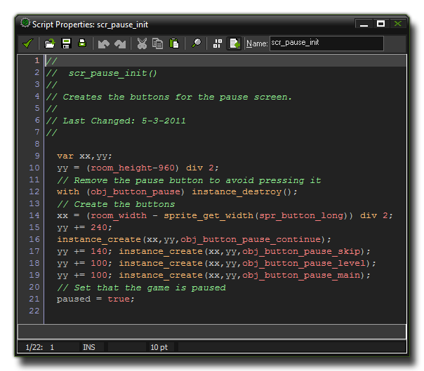

A code block consists of a set of instructions, called
statements, that are then interpreted by GameMaker: Studio
and used to make something happen within your game. That
"something" can be as simple as adding 2 and 2 to get 4, or as
complex as making an enemy run away when their health gets below a
certain value. The actual structure of the program can vary
greatly, depending on the functions it uses, but broken down to
basics it just looks like this:
<statement>;
<statement>;
...
Statements should be separated with a ';' symbol to prevent errors with variable declarations and to keep your code clean and tidy, and can consist of variable declarations, expressions and calls to specific functions or scripts. Here is a more visual representation of how a code block can look, this time created as a script in the GameMaker: Studio Script Editor: 
There are a number of different types of statements and
functions, which are discussed at length in subsequent sections of
the manual.